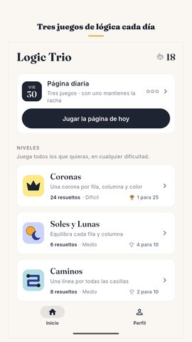
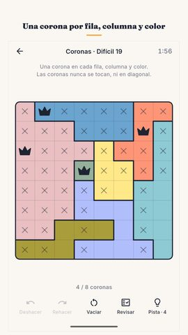
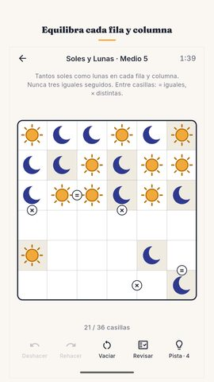
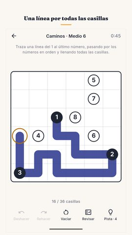
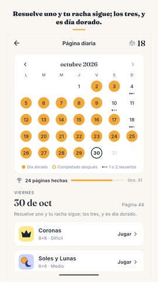
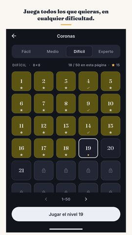
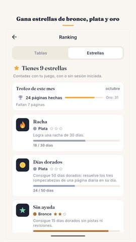
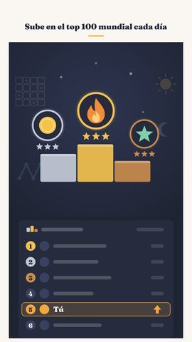

Kit de prensa de Logic Trio
Todo lo que necesitas para escribir sobre el juego o mostrarlo en un video. Úsalo libremente.
Logic Trio: Juegos de lógica
Juegos de lógica diarios: Coronas, Soles y Lunas, Caminos. Juega sin internet.
Videos
Capturas de pantalla
















Ícono y banner

Sobre el juego
Cada día aparece una página nueva con tres juegos de lógica, la misma para todos los jugadores del mundo. Coronas, Soles y Lunas, Caminos: una sola solución en cada uno. En Coronas y en Soles y Lunas nunca hay que adivinar. Resuelve uno y tu racha sigue; los tres, y es día dorado.
La página diaria
La página cambia a medianoche, con la hora de tu celular. El primer día fue el 17 de septiembre de 2026, y todas las páginas desde entonces siguen en el calendario del mes, así que un día que te perdiste es un día que puedes volver a jugar. Con resolver uno de los tres, la racha sigue viva, y está hecho así a propósito: un día ocupado no debería costarte una racha que armaste durante semanas. Resuelve los tres y el día se vuelve dorado. Diez días dorados en un mes dan un trofeo de bronce, veinte uno de plata y el mes completo uno de oro. Los escudos de racha cubren los días en que no alcanzas a jugar, y al terminar la página queda una tarjeta corta con tu resultado, sin spoilers, para compartirla con quien quieras.
Los tres juegos
Coronas: pon una corona en cada fila, en cada columna y en cada color, sin que dos coronas se toquen, ni siquiera en diagonal. Es un star battle.
Soles y Lunas: llena el tablero para que cada fila y cada columna tengan tantos soles como lunas, y que nunca haya tres iguales seguidos. Es un rompecabezas binario.
Caminos: traza una línea continua desde el primer número hasta el último, pasando por los números en orden y llenando todas las casillas. Es un number path.
Rompecabezas de lógica que no se acaban
Además de la página diaria, cada juego tiene sus propios niveles numerados en cuatro dificultades: fácil, medio, difícil y experto. Las cuatro están abiertas desde el primer minuto. Cada juego trae 1200 niveles revisados dos veces, 3600 entre los tres, y cuando llegas al final del paquete tu celular sigue creando más, mientras quieras jugar. Cada nivel del paquete se resolvió dos veces, por dos métodos distintos, antes de salir: una sola solución es un dato comprobado, no una promesa.
Ayuda que enseña
Deshacer y Rehacer son ilimitados. Revisar es gratis y sin límite, y te dice cómo vas sin resolverte el tablero. La pista tampoco pone la respuesta: te muestra dónde mirar y, en Coronas y en Soles y Lunas, te explica en una frase por qué esa casilla tiene que ser lo que es, para que el siguiente tablero te cueste un poco menos. Si ya hay un error en el tablero, la pista te lo señala primero.
Nada corre en tu contra
No hay vidas, ni energía, ni movimientos que se acaben, ni nada que te apure. El cronómetro cuenta hacia adelante, está ahí para tus propios récords y lo puedes apagar. No necesitas una cuenta. Iniciar sesión en Google Play Games es opcional: lleva tu progreso de un celular a otro y suma logros y tablas mundiales. Tus tiempos, tu mejor racha y todo lo que llevas resuelto quedan en una misma pantalla. El juego entero funciona sin conexión y no necesita internet.
Hecho para leerse
Español, inglés, hindi, portugués, indonesio, alemán y francés. Un tema claro y uno oscuro. Patrones sobre las regiones de color para daltónicos: el tablero también funciona en blanco y negro. Un recordatorio diario opcional, apagado hasta que lo pidas. Menos de 25 MB para descargar.
Gratis, con anuncios
Logic Trio es un juego de lógica gratis, que se paga con publicidad. Ningún anuncio interrumpe un tablero, ninguno aparece al abrir el juego y ninguno se mete entre los tres juegos del día; los tableros funcionan sin conexión y solo los anuncios necesitan internet. La última semana del calendario siempre está abierta, y un video corto y opcional puede abrir para siempre una página antigua, darte más pistas o reparar una racha rota. Nada de eso hace falta para seguir jugando.
Hecho por Nimbleknot.
Preguntas y reportes de errores: nimbleknot.games@gmail.com
Política de privacidad y términos: https://nimbleknot.github.io/logictrio/
No soy programador, así que la IA me ayudó con el código. — Ritesh, Nimbleknot